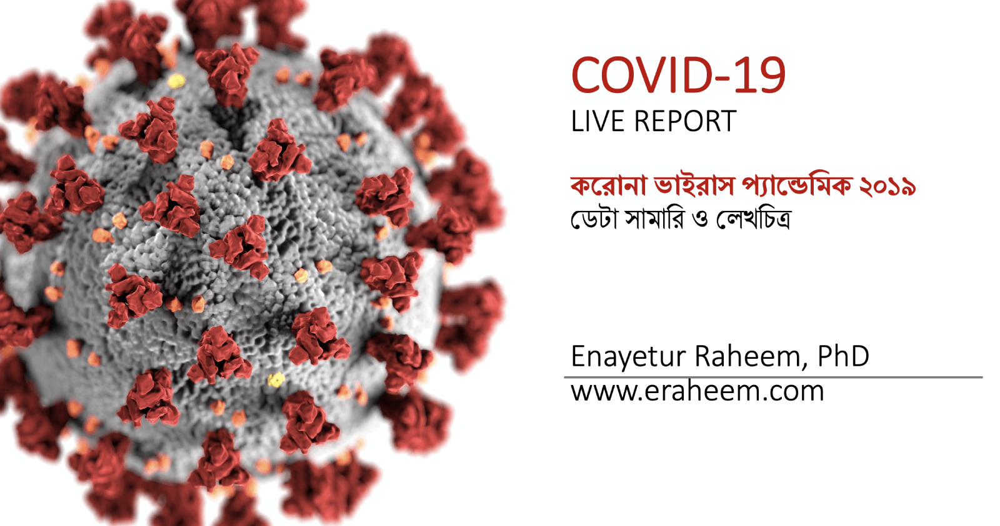

COVID-19 Live Report
2020-04-07
About this report
This is a live report about the COVID-19 pandemic also known as SARS-CoV2.

Disclaimer
The information provided here are for educational purposes only. All data have been collected from freely available sources. For details, please check out the Reference section of this report.
This live report is updated a few times daily. So please check back to get the most up to date report.
Purpose
The goal of this report is to provide up to date summary of the global situation and compare that with Bangladesh.
Data sources
2019 Novel Coronavirus COVID-19 (2019-nCoV) Data Repository by Johns Hopkins CSSE https://github.com/CSSEGISandData/COVID-19
নিউ ইয়র্ক টাইমস গিটহাব রিপজিটরি https://github.com/nytimes/covid-19-data
Bangladesh data (government + suspected cases from newspaper reports) https://cutt.ly/StTIxJQ
Volunteering opportunity
If you have experience with R programming, and have interest in contributing to this project, please reach out to me via email: enayetur.raheem@brfbd.org. Please mention specifically how do you want to contribute. Because I receive too many inquiries, I cannot reply to each an every email. I will only respond if your email has sufficient information to spark my interest. Thanks in advance :)
What skills are useful
- writing R functions to perform a specific task given a data set
- fitting statistical models
- time series forecasting
Found an error?
- If you have found an error, please create an issue at https://github.com/raheems/covid19/issues